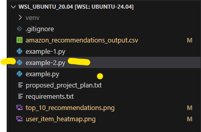
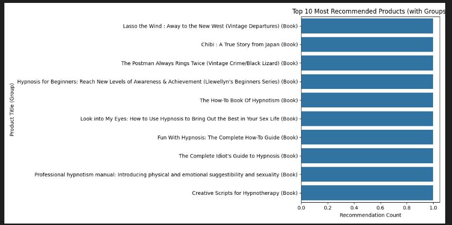
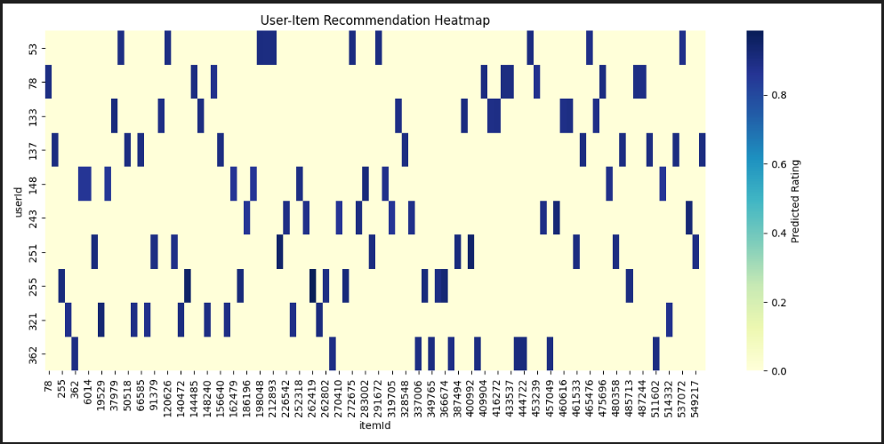
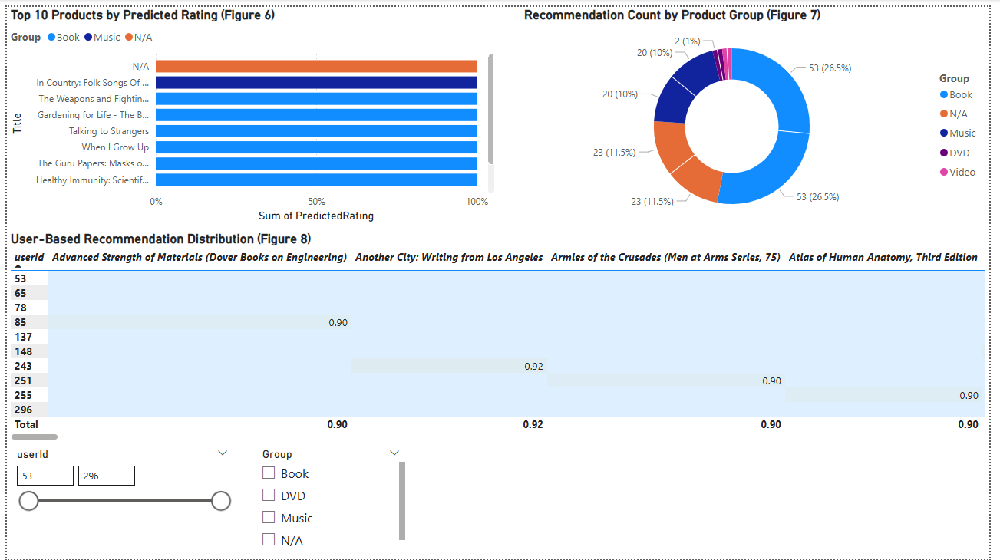
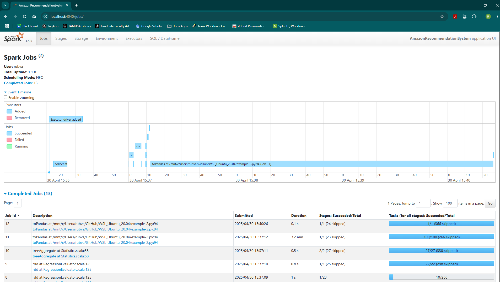
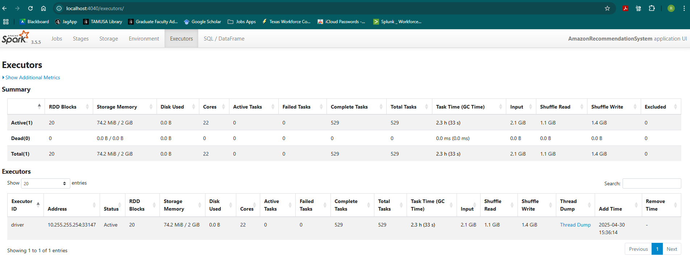

Objective
Build a scalable recommendation pipeline from Amazon product metadata and co-purchase relationships.
Big Data Analytics • Machine Learning • Recommendation Systems
Big Data Analysis and Security (CSEC 5311)
A CSEC 5311 semester project that transforms Amazon co-purchasing relationships into implicit interactions, trains a PySpark ALS collaborative-filtering model, and presents recommendation output through Python visualizations, Power BI, and the Spark Web UI.
Build a scalable recommendation pipeline from Amazon product metadata and co-purchase relationships.
PySpark Alternating Least Squares collaborative filtering using implicit interactions.
RMSE of 0.3904 on the original 20% held-out test set.
Six original figures from the submitted report highlight the development environment, model output, visualizations, Power BI dashboard, and Spark monitoring. All 15 report figures remain in the project repository.






The original repository contains the PySpark implementations, requirements, recommendation CSV, generated charts, and project plan.